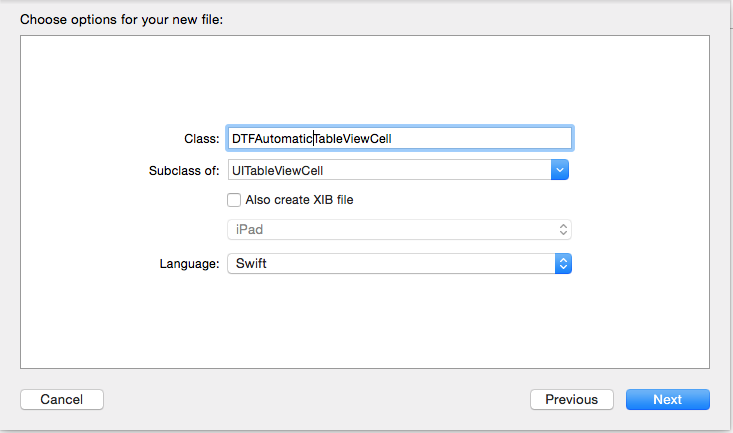

One of the memories of WWDC last year for myself was sitting in the auditorium and listening about allowing iOS to calculate the height for
each of the UITableViewCell's inside a UITableView and thus allow for the developer to no longer implement the delegate to calculate the height
for the row at each indexPath. This functionality is definitely useful if apple implemented it correctly and
there were no underlying bugs in it. With iOS8.3 the solution finally seems to be stable and not have any issues with the UIScrollView
content offsets when coming back to the UIViewController holding the UITableView from another
UIViewController.
How It Works
Under the hood, Apple have utilized AutoLayout to calculate the automatic height of the row during the creation of each UITableViewCell.
In order for Automatic Cell Height to work you need to configure the following in an application.
- Set the estimated height per row
- Set the row height to a special Apple designated constant
- AutoLayout constraints on the
UITableViewCell
Implementation
In order for the UITableView to calculate the size automatically you need to set up the estimated height per row and the row height to
the special apple constant UITableViewAutomaticDimension as shown in the code snipet below.
tableView.estimatedRowHeight = 166.0 // 1. tableView.rowHeight = UITableViewAutomaticDimension // 2.Here is what is occurring in the code above:
- Provides as accurate as possible the estimated height of each row
- Allows the UITableView to return the rowHeight based off information from the
UITableViewCell
UITableView to use automatic calculations for the rowHeight per row.
UITableViewCell Setup
The UITableViewCell must provide enough information through its AutoLayout constraints so the UITableView can calculate the height of the cell when it has been configured with all of its data.
You can do this either through a Storyboard or alternatively through the code. For this blog we will show how to do it through the code but the same principals apply to the Storyboard.
Go to File -> New -> File and you will see the screen below:
Choose the iOS -> Source -> Cocoa Touch Class and hit the "Next" button.

Name the file approriately for the case of this demo it has been named "DTFAutomaticTableViewCell" and click the "Next" button
For demonstration purposes we will put two UILabel objects into the UITableViewCell's contentView and setup their constraints.
// 1.
private lazy var titleLabel: UILabel = {
let label = UILabel()
label.setTranslatesAutoresizingMaskIntoConstraints(false)
label.textAlignment = .Left
label.font = UIFont.preferredFontForTextStyle(UIFontTextStyleHeadline)
return label
}()
// 2.
private lazy var descriptionLabel: UILabel = {
let label = UILabel()
label.setTranslatesAutoresizingMaskIntoConstraints(false)
label.textAlignment = .Left
label.numberOfLines = 0
label.font = UIFont.preferredFontForTextStyle(UIFontTextStyleBody)
return label
}()
override init(style: UITableViewCellStyle, reuseIdentifier: String?) {
super.init(style: style, reuseIdentifier: reuseIdentifier)
// 3.
contentView.addSubview(titleLabel)
contentView.addSubview(descriptionLabel)
setupConstraints()
}
private func setupConstraints() {
// 4.
let viewsDictionary = ["title":titleLabel, "description":descriptionLabel]
// 5.
let metrics = ["titleHeight":17.0,
"leadingMargin" : 15.0,
"trailingMargin" : 5.0,
"verticalSpacing" : 8.0]
// Setup the title label horizontal constraints
NSLayoutConstraint.activateConstraints(NSLayoutConstraint.constraintsWithVisualFormat(
"|-(leadingMargin)-[title]-(trailingMargin)-|",
options: NSLayoutFormatOptions(0),
metrics: metrics,
views: viewsDictionary))
// Setup the description label horizontal constraints
NSLayoutConstraint.activateConstraints(NSLayoutConstraint.constraintsWithVisualFormat(
"|-(leadingMargin)-[description]-(trailingMargin)-|",
options: NSLayoutFormatOptions(0),
metrics: metrics,
views: viewsDictionary))
// Setup the title and description label vertical constraints
NSLayoutConstraint.activateConstraints(NSLayoutConstraint.constraintsWithVisualFormat(
"V:|-(verticalSpacing)-[title(titleHeight)]-(verticalSpacing)-[description]-(verticalSpacing)-|",
options: NSLayoutFormatOptions(0),
metrics: metrics,
views: viewsDictionary))
}
Here is what is occurring in the code above
- Setting up a
UILabelthat will hold title information. This is setup lazily so most of the configuration is in one place and not spread through your class. - Setting up a
UILabelthat will hold the description information the one difference with this one is the numberOfLines is set to 0. This will allow theUILabelto grow vertically with the contents it has inside of it. This is setup lazily so most of the configuration is in one place and not spread through your class. - Adding both the title and description
UILabel's to theUITableViewCell's contentView. - Setting up the views dictionary so the views can be referenced when using AutoLayout visual format which is similar to ASCII art.
- Setting up the metrics which are constants to be accessed while writing the AutoLayout visual format. This keeps everything neat and allows you to use constants so you change the code in one place vs multiple places.
// Setup the title label horizontal constraints
NSLayoutConstraint.activateConstraints(NSLayoutConstraint.constraintsWithVisualFormat(
"|-(leadingMargin)-[title]-(trailingMargin)-|",
options: NSLayoutFormatOptions(0),
metrics: metrics,
views: viewsDictionary))
The above code is dealing with the "titleLabel" UILabel specifically its horizontal constraints:
- "leadingMargin" is taken from the metrics dictionary setup previously and will be 15.0 in this case (the "metrics" parameter is passed the "metrics" dictionary)
- "title" is a reference to the title
UILabeland is provided via the "viewsDictionary" setup previously. ("title" represents the "titleLabel"UILabel) - "trailingMargin" is taken from the metrics dictionary setup previously and will be 5.0 in this case (the "metrics" parameter is passed the "metrics" dictionary)
// Setup the description label horizontal constraints
NSLayoutConstraint.activateConstraints(NSLayoutConstraint.constraintsWithVisualFormat(
"|-(leadingMargin)-[description]-(trailingMargin)-|",
options: NSLayoutFormatOptions(0),
metrics: metrics,
views: viewsDictionary))
The above code is dealing with the "descriptionLabel" UILabel specifically its horizontal constraints:
- "leadingMargin" is taken from the metrics dictionary setup previously and will be 15.0 in this case (the "metrics" parameter is passed the "metrics" dictionary)
- "description" is a reference to the title
UILabeland is provided via the "viewsDictionary" setup previously. ("description" represents the "descriptionLabel"UILabel) - "trailingMargin" is taken from the metrics dictionary setup previously and will be 5.0 in this case (the "metrics" parameter is passed the "metrics" dictionary)
Now that the horizontal constraints are setup the remaining piece is to setup the vertical constraints in order for iOS to be able to automatically calculate the height for the UITableViewCell.
// Setup the title and description label vertical constraints
NSLayoutConstraint.activateConstraints(NSLayoutConstraint.constraintsWithVisualFormat(
"V:|-(verticalSpacing)-[title(titleHeight)]-(verticalSpacing)-[description]-(verticalSpacing)-|",
options: NSLayoutFormatOptions(0),
metrics: metrics,
views: viewsDictionary))
- "verticalSpacing" is taken from the metrics dictionary setup previously and will be 8.0 in this case (the "metrics" parameter is passed the "metrics" dictionary)
- "title(titleHeight)" this sets the vertical height for the title label based on the metric "titleHeight" (in this case 17.0) provided from the "metrics" dictionary
-
"-(verticalSpacing)-[description]-(verticalSpacing)-" this determines that the top of the "description"
UILabelshould be 8 pixels below the bottom of the "title"UILabel. This also determines that the bottom of the "description"UILabelshould be 8 pixels above the contentView's bottom margin. There is no height restriction put on the "description" label since its height is automatically calculated by the data inside it hence setting the "numberOfLines" earlier to 0.
UITableViewCell and hence this can be used in the UITableView without having to implement the delegates as was the previous implementation.
Conclusion
Apple definitely made a big leap in maintainability for developers with this functionality since now we no longer have to perform the calculations ourselves but instead provided we setup the constraints correctly on our UITableViewCell's we will get this functionality for free.
A link to a demonstration project is provided here. This demo project provides a list of countries in the world with descriptions of different sizes for each country and thus the UITableView is calculating the heights for the UITableViewCell's automatically.
Main Page